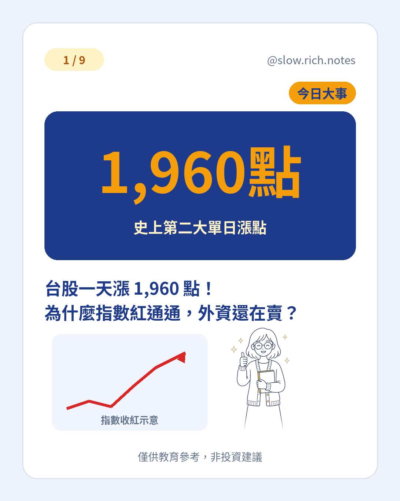

11/9（一）台股加權指數收在 41,661.70 點，大漲 1,960.06 點，漲幅 4.94%，成交金額 8,379.29 億元。這是台股史上第二大的單日收盤漲點（史上最大是 7/31 的 +3,186.45 點）。開盤 40,347.28 點，盤中最高一度到 42,349.36 點，收盤重新站上 4 萬 1 千點。
前一週台股大約跌了 5,510 點、跌幅約 12%。急跌後出現單日強彈並不罕見，但還不能單憑一根 K 線就認定跌勢結束。若想分清回檔、修正、空頭，可看回檔、修正、空頭差在哪；並對照前一波大跌日的台股史上第 7 大跌點。
1,960 點聽起來很兇，其實要跟漲幅一起看。指數基期越高，同樣大約 5% 的漲跌，換成「點數」就會很大。所以「史上第二大漲點」很吸睛，比較不同時期時，看百分比通常比只看點數公平。
更讓新手困惑的，是「指數紅通通，外資卻還在賣」。當天外資及陸資現貨賣超約 900.56 億元，連續第 8 個交易日站在賣方；投信買超約 267.48 億、自營商賣超約 312.18 億，三大法人合計賣超約 945.26 億元。指數漲跌是市場整體價格結果；外資買賣超只是某一類投資人的淨買賣。有人買、有人賣，買方力道夠，指數仍可以收紅。想搞懂外資、投信、自營商分別是誰，可讀三大法人到底是誰。
期貨這邊，外資台指期未平倉淨空單來到 101,771 口，首度突破 10 萬口。淨空單是空方未平倉減多方未平倉的差額，不是當天新放空 10 萬口；也可能是避險或套利，不能直接等同「全部在押明天一定跌」。
大漲這天，新手可以回想：自己的持有原因還在不在、部位是不是太集中單一題材、緊急預備金夠不夠。不要把「史上第二大漲點」當成進場訊號，也不要只看點數、忽略百分比與籌碼結構。若還在打基本功，可以先免費領取《投資新手入門清單》。